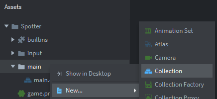
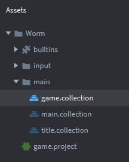
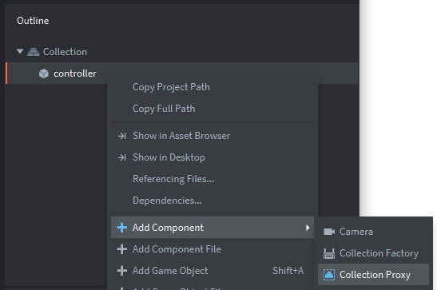
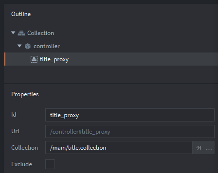
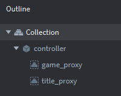

Tutorials for 2D games projects
Worm | Building the skeletal structure of the game.
- Create a new empty project titled, 'Worm'.
- You can delete the README.md file. Right click the file and choose 'Delete'.
We are going to create a controller and two game worlds.
- main.collection - the controller for the other collections. It is not a game world that the player sees, but instead it will be a utility for other collections to use.
- title.collection - this will be the title screen that the player sees first and will allow them to choose the number of players.
- game.collection - this will be where the game is played, containing all the game objects.
- In the assets panel, right click, 'main' and select, 'New...','Collection'.

- Give the collection the name, 'title' and click, 'Create Collection'.

- In the properties panel, change the name of the collection to be, 'title'.
- Repeat steps 3 to 5 to create another collection named, 'game'.
Don't forget you will need to name the file when it is created and change the name property.

- In the assets panel, inside the 'main' folder, double click, 'main.collection'.
- In the outline panel, right click, 'Collection' and select, 'Add Game Object'.
- In the properties panel, change the 'Id' of the game object to be, 'controller'.
- In the outline panel, right click, 'controller' and select, 'Add Component', 'Collection proxy'.

- In the properties panel, change the following properties:
- Id: title_proxy
- Collection: /main/title.collection (you can click the three dots and select this)

- Repeat steps 9 to 11 to create a collection proxy for the game collection.
- Set the 'Id' of the proxy to be, 'game_proxy'.
- Set the 'Collection' property to be, '/main/game.collection'. Remember you can use the three dots to select the file.
Make sure you haven't put the title_proxy in the wrong place. They both belong to the controller object in main.collection.

- Save the changes by pressing CTRL-S or 'File', 'Save All'.
We have created the empty game worlds that our controller will be able to enable and disable as we navigate through the menu and game screen.
Next we are going to create a script for main.collection that will handle the collection proxies. Stage 1b >
 Craig'n'Dave | Version 1.3
Craig'n'Dave | Version 1.3